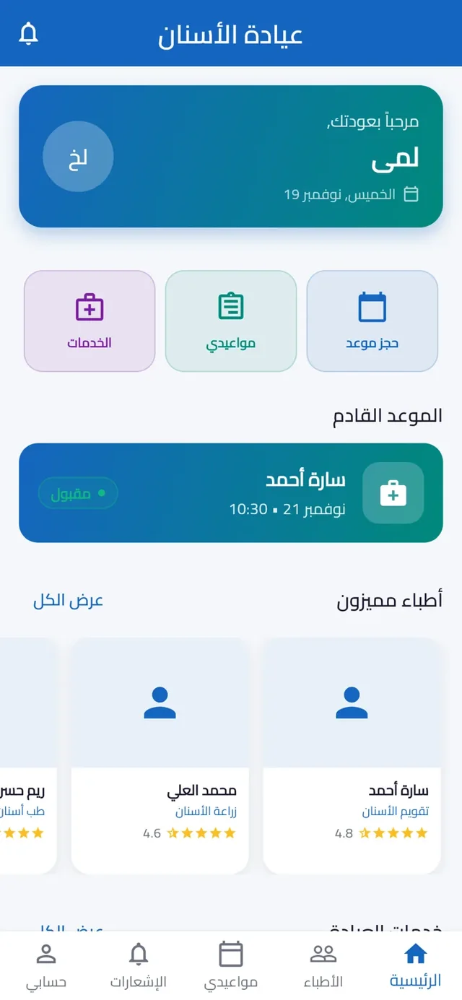
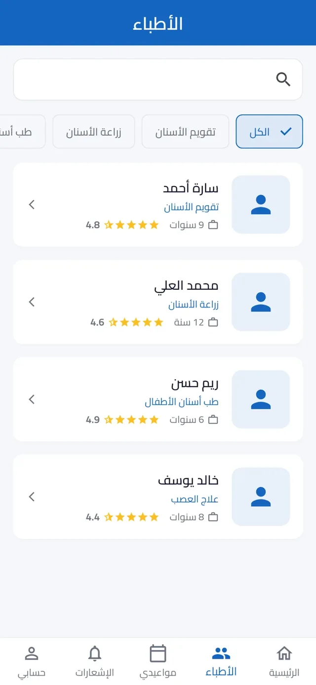
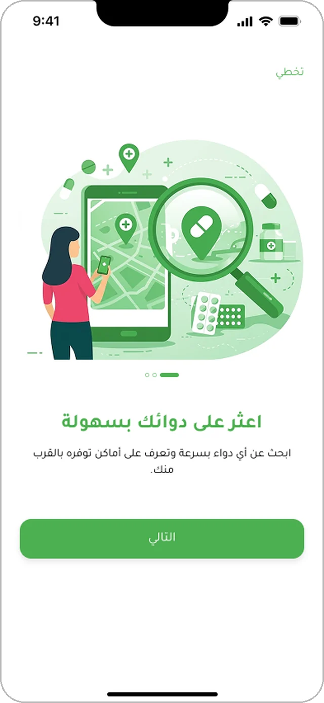
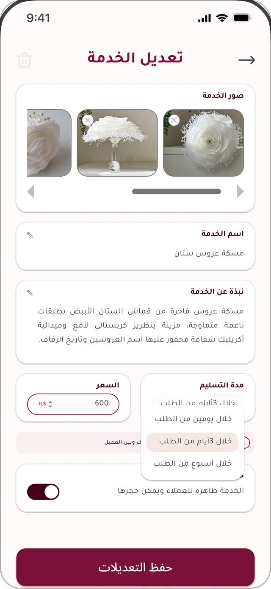
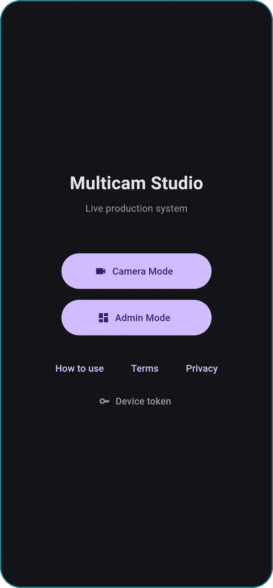

FLUTTER DEVELOPER · SYSTEM ANALYST · TRAINER
أبني تطبيقات Flutter
وأدرّب من يبنيها
أنا براء الحداد من غزّة. أحوّل الفكرة إلى تطبيق يعمل: من المتطلبات والتصميم حتى النشر. ودرّبت متدربين في Go Hub ومركز دخل الأكاديمي.
من أنا
مطوّر ومحلّل أنظمة ومدرّب
خريج علوم الحاسوب من جامعة الأقصى، أعمل مع عملاء عن بعد منذ 2022. أبني تطبيقات Flutter كاملة: الواجهة، وإدارة الحالة، والربط مع الـ API وFirebase، وقاعدة البيانات خلفها.
أكتب المتطلبات (BRD وSRS) وأصمّم الشاشات في Figma، ثم أبني التطبيق. ودرّبت متدربين، وأعددت دورة Flutter كاملة للمبتدئين.
الأعمال
تطبيقات بنيتها
لكل تطبيق صفحة فيها الفكرة والمزايا واللقطات.


الأناقة الذكي
كاشير يعمل بلا إنترنت
اقرأ التفاصيل ←

عيادة الأسنان
حجز ودفع ولوحة إدارة
اقرأ التفاصيل ←

PharmacyLink
صيدلية ومساعد ذكي
اقرأ التفاصيل ←

فرح
سوق خدمات الأفراح
اقرأ التفاصيل ←

رجعلي
مفقودات وموجودات
اقرأ التفاصيل ←

Multicam Studio
استوديو تصوير بعدة هواتف
اقرأ التفاصيل ←Waslah
منصة تربط السائقين بالزبائن، ويختار فيها الذكاء الاصطناعي السائق الأنسب لكل طلب. بنيتها وحدي من واجهة Flutter إلى نموذج البيانات وطبقة الـ API.
مشروع التخرج: تطبيق وكيل ذكاء اصطناعي (AI Agent) يربط نموذجاً لغوياً ببيانات التطبيق وواجهات خارجية، صمّمته وبنيته كاملاً.
التدريب
أدرّب كما أبني
درّبت في Go Hub وفي مركز دخل الأكاديمي، وصمّمت دورة Flutter كاملة للمبتدئين.
دورة Flutter للمبتدئين
7 أسابيع و15 لقاءً، مع شرائح وجدول توقيت لكل لقاء: Dart والـ Widgets والتخطيط، التنقل والنماذج، إدارة الحالة بـ Cubit، الـ API وFirebase، من Figma إلى Flutter، النشر على Google Play والعمل الحر. ولقاء أخير من الفكرة إلى المنتج: BRD وSRS وتخطيط السبرنتات والمعمارية مع العمل بمساعدة الذكاء الاصطناعي.
مدرّب · Go Hub
تخطيط وتقديم جلسات تدريبية، وتجهيز المواد والتمارين ومتابعة المتدربين.
مدرّب · مركز دخل الأكاديمي
تقديم جلسات تدريب وتوجيه المتدربين في التطبيق العملي.
الخبرة
مسيرتي
مهندس برمجيات وقائد فريق
قدت فريق مطورين وتابعت التسليم، وساهمت في معمارية التطبيق وتصميم قاعدة البيانات والتوثيق.
مطوّر Flutter
طوّرت واختبرت ميزات تطبيقات منها فرح وPharmacyLink مع قواعد بيانات علائقية.
مطوّر مستقل
تطبيقات Flutter وواجهات أمامية لعملاء عن بعد، من جمع المتطلبات حتى التسليم.
مؤسسات دولية ومحلية
إدخال وتدقيق بيانات المستفيدين وإعداد التقارير الدورية.
المهارات
ما أستخدمه
Flutter وDart
إدارة الحالة
الشبكة والخلفية
أدوات
تصميم وتحليل
الذكاء الاصطناعي
الدورات والتدريب
- Flutter وتطوير تطبيقات الموبايل — غزة سكاي جيكس (GSG) 2023
- سلسلة Flutter — وائل أبو حمزة
- معسكر عصر الذكاء الاصطناعي — NEON
- برنامج الذكاء الاصطناعي — UNDP
- مهارات العمل الحر 30 ساعة — مشروع DigiWork (GIZ)
السيرة الذاتية
كل ما سبق في ملف واحد
سيرة ذاتية بالإنجليزية في 3 صفحات: التدريب، والخبرة، والمشاريع، والمهارات.
⬇ حمّل السيرة الذاتية PDF